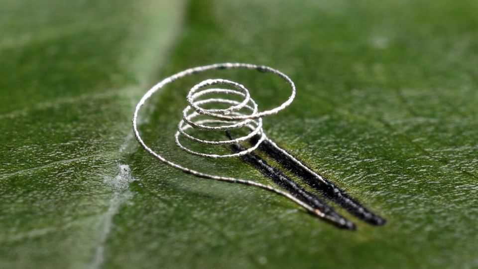

Electronics can now be printed onto living tissues
From cow femurs to replacement hips and even living leaves
June 25th 2026

IT BEGAN IN the 1980s as a way to quickly produce simple prototype models in plastic. These days 3D printing—or “additive manufacturing”, to give it its posher name—is used to make kitchen gadgets, jet-engine parts, dental implants and even some buildings.
In a paper published in Science Advances, a team of researchers led by Yong Lin Kong and his colleagues at Rice University in Houston, Texas, propose another application. They have come up with a way to print electronic circuits onto delicate materials, including living tissue. The researchers hope that could eventually lead to medical implants that wirelessly monitor the condition of their recipients, high-tech pills and more.
3D-printing circuitry is not a new idea. Nano Dimension, based in Massachusetts, for instance, prints electronics into communications equipment and medical sensors. Printers made by Optomec, based in New Mexico, build antennas directly into smartphones cases, as well as printing circuits onto touch screens and solar panels.
The process uses electronic inks that contain tiny particles of conductive material, such as copper, silver or gold. The particles are then fused together to form a conductive pathway, usually by a process known as annealing, which involves either heating the entire product in a furnace, or zapping the inks with a laser.
But that approach has limits, says Dr Kong. The heat needed to fuse the particles can damage sensitive materials, including some polymers and living tissue. It is this issue that Dr Kong and his colleagues now think they have overcome. They have developed a way to anneal electronic inks using microwaves focused into a beam smaller than a human hair. The precision of the beam ensures that only the ink particles heat up, avoiding any damage to the surrounding substances.
The researchers produced a special resonator to amplify the microwave energy and a tapered tip to focus the beam into a dot less than 200 millionths of a metre across. The kit is compact enough to be fitted to a desktop 3D printer. By adjusting the power of the beam, it is possible to change the microstructure of the ink. This can be used to create regions of higher or lower conductivity along the circuit, allowing some components, such as resistors, to be created within the wiring.
Dr Kong and his colleagues have plenty of applications in mind. 3D printing has already been used to make biological tissues for transplant, including heart valves and tracheas, without the need for human or animal donors. Adding circuitry could turn such grafts into wireless sensors, allowing them to monitor a patient’s progress in real time, or even stimulate the activity of the organ they are printed on.
As a proof of concept, the researchers have printed a strain gauge onto both a cow’s femur and the sorts of polymers used in replacement knees and hips for human patients. Another idea is printing circuits onto “ingestible diagnostic devices”. Essentially computerised pills, these are designed to relay information from inside a patient or carefully control the release of drugs. The researchers have even managed to print a humidity sensor onto a living leaf. The natural world, it seems, is the next canvas for additive artists. ■
Curious about the world? To enjoy our mind-expanding science coverage, sign up to Simply Science, our weekly subscriber-only newsletter.